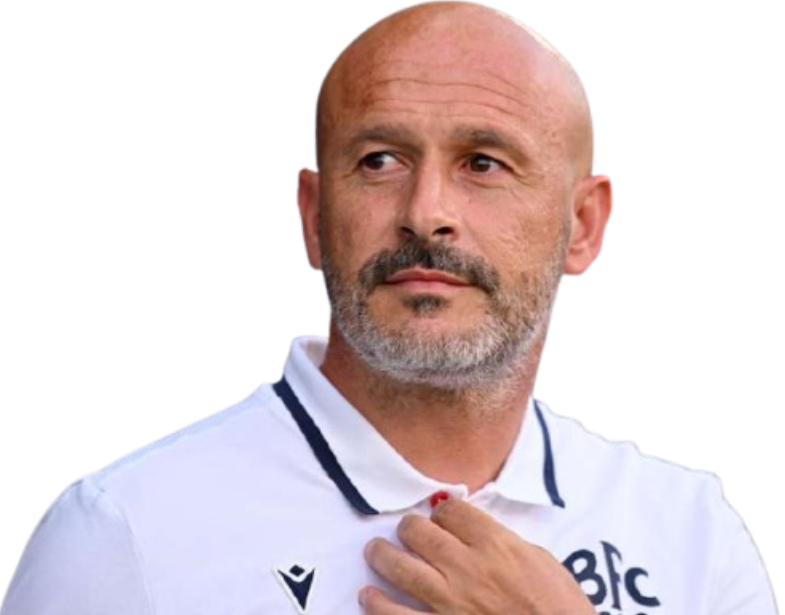

Treinador: Vincenzo Italiano
Vincenzo Italiano, após passagens históricas pelo Spezia e pela Fiorentina, onde alcançou duas finais europeias, assumiu o Bologna com o objetivo de afirmar o clube como uma potência no futebol italiano e internacional.

Estádio: Renato Dall'Ara
O Stadio Renato Dall'Ara é a histórica e majestosa casa do Bologna FC. Inaugurado em 1927, é considerado um dos estádios mais icónicos e visualmente distintos de Itália, servindo como o palco onde "O Esquadrão que faz o mundo tremer" construiu a sua lenda.

Estilo de Jogo:
O estilo de jogo de Vincenzo Italiano no Bologna, é pautado pelo protagonismo absoluto e por uma mentalidade ofensiva que não teme correr riscos, independentemente do adversário.
"Lo Squadrone che tremare o mondo fa!"